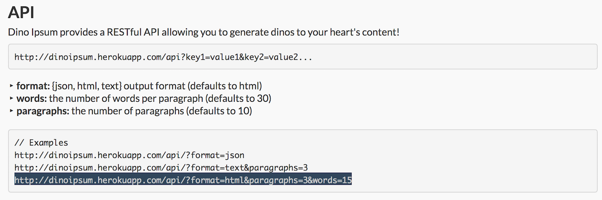

How-To:
Twitter Generator
Welcome
This guide will cover how create a random tweet for Twitter using the Copora API and Dino Ipsum API. So, to begin...
What is Copora?
Copora is a RESTful API that qas designed to hold a large amount of information with different adjectives, nouns, and categories that are used to create test programs and apps. I chose this API since it would allow us to use a variety of different info and categories to create our tweets. But that is not all, I decided to use another API as well, this one being...
Dino Ipsum
Dino Ipsum is a RESTful API that is designed to generate a variety of dinosaur names that can be used to populate programs or be used as text. Most commonly, it’s used as text filler for projects and static webpages. For this guide however, it will be used to help generate the subject of our Twitter bot.
Both of these are APIs that will help us get what we need to build our program. But now, you must be asking...
What is an API?
An API, or application programming interface, is a set of routines, protocols and tools used in building software apps. It helps specify how the components in each software program should interact and display in the program. There are a variety of different APIs that each do their own thing, from Libraries and Frameworks, Web APIs, Remote APIs, and Operating Systems.
For this guide, we will be using a Web API, that will be pulling information from server-side endpoints to allow us to pull information as either Extensible Markup Language(XML), or Javascript Object Notions(JSON). With permission, we can access information from these websites, and create web apps to allow us to search and display the requests made. For what we are going to do, we will be requesting JSON from the API, and will display through a UI interface.
Getting the API links
Before we begin, We need to go retrieve the API links that will allow us to generate our phrases:
We can do a basic call to [link], that will give us the following JSON data:
{"description":"an API for the corpora. to access a data, navigate to '/{key}/{value}', for example: '/animals/dinosaurs' or '/words/literature/shakespeare_words'","data":{"animals":["birds_antarctica","birds_north_america","common","dinosaurs","dogs"],"archetypes":["artifact","character","event","setting"],"architecture":["rooms"],"art":["isms"],"colors":["crayola","paints","web_colors"],"corporations":["cars","djia","fortune500","nasdaq","newspapers"],"film-tv":["tv_shows"],"foods":["beer_categories","beer_styles","breads_and_pastries","condiments","curds","fruits","herbs_n_spices","hot_peppers","menuItems","pizzaToppings","sandwiches","vegetables"],"games":["cluedo","jeopardy_questions","pokemon","scrabble","street_fighter_ii","trivial_pursuit","wrestling_moves"],"geography":["canada_provinces_and_territories","countries","english_towns_cities","london_underground_stations","oceans","rivers","us_cities","venues"],"governments":["nsa_projects","uk_political_parties","us_federal_agencies","us_mil_operations"],"humans":["authors","bodyParts","britishActors","englishHonorifics","firstNames","moods","occupations","prefixes","richpeople","scientists","spanishFirstNames","spanishLastNames","spinalTapDrummers","suffixes","us_presidents","wrestlers"],"instructions":["laundry_care"],"materials":["abridged-body-fluids","building-materials","carbon-allotropes","decorative-stones","fabrics","fibers","layperson-metals","metals","natural-materials","packaging","plastic-brands","sculpture-materials","technical-fabrics"],"music":["genres","mtv_day_one"],"mythology":["lovecraft"],"objects":["objects"],"plants":["cannabis","flowers"],"science":["elements","hail_size","minor_planets","planets","pregnancy","toxic_chemicals"],"technology":["appliances","computer_sciences","fireworks","guns_n_rifles","knots","lisp"],"words":["adjs","adverbs","closed_pairs","common","eggcorns","nouns","oprah_quotes","personal_nouns","prefix_root_suffix","proverbs","resume_action_words","rhymeless_words","spells","states_of_drunkenness","us_president_quotes","verbs"],"words/literature":["mr_men_little_miss","shakespeare_phrases","shakespeare_sonnets","shakespeare_words"],"words/stopwords":["ar","bg","cs","da","de","en","es","fi","fr","gr","it","jp","lv","nl","no","pl","pt","ru","sk","sv","tr"],"words/word_clues":["clues_five","clues_four","clues_six"]}}
We can also go to the Dino Ipsum site, and it will show the URL to call a single paragraph with one word, which is all we will need for the API. See below for an example:

To properly create our Twitter bot, we need to break down what kind of APIs we need to pull to build our tweet. We will need the following:
- Dinosaur name: http://dinoipsum.herokuapp.com/api/?format=html¶graphs=1&words=1
- Verb: http://corpora-api.herokuapp.com/words/verbs
- Job: http://corpora-api.herokuapp.com/humans/occupations
- Company: http://corpora-api.herokuapp.com/corporations/fortune500
- Food: http://corpora-api.herokuapp.com/foods/fruits
Setting up our Project
Now that we have our API Key, we can now go ahead and start work on creating a web app for our API Key. To begin, let's create the folders:
dino-tweet/
├── js/
│ ├── dino-interface.js
│ └── dinoTweet.js
├── scss/
│ └── styles.scss
└── index.html
For now, don't worry about what the files will be, we will get to those soon. For now, in the command line enter in:
$npm init.
Go thorugh the list entering in the info, and in the end, you will have a package.json file that looks like the following:
{
"name": "dinotwitter-page",
"version": "1.0.0",
"description": "Random Twitter generator using Copora and Dino Ipsum API",
"main": "index.js",
"scripts": {
"test": "echo \"Error: no test specified\" && exit 1"
},
"keywords": [
"Dino",
"API"
],
"author": "OSU student",
"license": "ISC"
}
Once this is completed we will install a node package that will help us with building our app called Gulp.
So what is gulp.js?
gulp helps with optimizing and automating the code and other node packages, helping with directing and running different programs with minimal effort. It acts much like an air traffic controller, helping direct what each plugin and module does, and prevents them from going ahead or causing any errors and crashes. This helps save a lot of time working on time-consuming and repetitive tasks, and can free up more time for working on other parts of the program.
While we are also saving it to the project, we should install it globally so that we can use gulp in our terminal. this can be done by entering in $ npm install gulp -g into the command line.
Next, we will need to install our next package, browserify.
$ npm install browserify --save-dev
Browserify allows for export and required to be translated from the browser into javascript, which will be used by node.js to use that info to execute our call.
Along with browserify, we will install several other modules that will be used for this project, and can be used in other projects as well. Go ahead and enter in the following into the command line:
$ npm install vinyl-source-stream --save-dev
$ npm install gulp-concat --save-dev
$ npm install gulp-uglify --save-dev
$ npm install gulp-util --save-dev
$ npm install del --save-dev
$ npm install jshint --save-dev
$ npm install gulp-jshint --save-dev
As you may have noticed when we saved the module, -dev was added onto the end. This let’s our program know gulp will be saved as a development dependency, which means it will be used for app development and build process rather than in our production. By separating these dependencies to development and production, it will allow our final, app to run faster once completed.
Now for what each of these packages do, they help us able to run and have our program able to perform tasks that are required and can allow our project to run.
They do the following:
- vinyl-source-stream: Takes browserified code and places it into a new file as the program runs.
- concat: Consolidates all js files into a single script tag, reducing loading time.
- uglify: Removes unnecessary characters from concatenated files.
- utility: Allows gulp build of either development or production app.
- del: Cleans up environment before a build by deleting build and tmp folders.
- jshint: Helps spot errors in files and indicating what the problem is.
Now that we have all of these installed, we need to create a task for each module to the gulpfile.js in order for it to run properly and function as we want them to.
As stated before, browserify requires us to have each installed module be required variables, allowing us to set it at the top of out file. Once we have all our required variables, we can start creating tasks for each one, and have them run the necessary code. See below the code for our gulpfile, as well as notes for what each task is, and what each part of the task does.
Now let's go to our index.html, and create a page that will be populated by the info we get from the APIs, and adding them into <span> tags.
<head>
<script type="text/javascript" src="build/js/app.js"></script>
<title>Dino Twitter Bot</title>
</head>
<body>
<div>
<h1>Dino Twitter Bot</h1>
<br>
<button class="btn">Get a Tweet</button>
</div>
<div id= "allTweets">
<h2>@<span id="dinoTwitter"></span> - Dinosaur <span id="occupation"></span></h2>
<div>
<span id="dino"> </span> <span id="verb"></span> my <span id="fruits"></span>... I'm gonna quit <span id="companies"></span> ! <br> <span id="emoji"></span>
<br>
</div>
</div>
As you may have noticed, for our <script> tag, we have in the code the following:
<script type="text/javascript" src=“build/js/app.js"></script>
Thanks to having Browserfy, we only need to make one call to our js file to have it run.
Now that we have our gulpfile and a form, let’s start by creating the javascript files that will allow us to communicate with the web API, and get the JSON to display. But before we do that, we need to be able to have it so that our frontend js will be separate from our backend js. The main reason we want to keep these two parts separated is that it allows us to be able to keep everything organized, prevent any kind of version conflict that may be required for one end, and help optimize each side of the program to function at it’s highest capacity. So, to help us with creating the frontend/backend, we will be using Bower to help us build and run the frontend.
What is Bower?
Bower is another package manager, like npm, used to help install frontend packages like jQuery and Bootstrap. Another useful ability for bower is that it is not only limited to Node, but can be used with other frameworks, like AngularJS and Ruby on Rails.
To begin, let’s install bower globally with $ npm install bower -g, following up by entering in bower init into the command line to create a bower.json file. It will copy a lot of the info that already exists in our package.json file, but we can skip all those steps by just hitting Enter to have everything set up as default.
Now that we have our bower.json file set up, we can now install frontend dependencies, starting with jQuery. This can be done by entering in $ bower install jquery --save into pir command line to download the packages and save them onto our local machine, much like how node_modules works. Another added benefit is that now that we have the necessary files saved locally, we don’t need to do any CDN calls that we would otherwise rely on. This can be put into the header of our HTML page as the following:
<script src="bower_components/jquery/dist/jquery.min.js"></script>
Next, let’s install Bootstrap with $ bower install bootstrap —save, and enter in the following in our form:
<link rel="stylesheet" href="bower_components/bootstrap/dist/css/bootstrap.min.css">
<script src="bower_components/bootstrap/dist/js/bootstrap.min.js"></script>
We should now have a solid HTML page:
But once again, we are starting to have a lot of <script> and <link> tags in our HTML page, which can slow us down. To help solve this, we can use npm to install bower-files to help.
$ npm install bower-files --save-dev
We will also create another gulp task and required variable:
var lib = require('bower-files')();
gulp.task('bowerJS', function () {
return gulp.src(lib.ext('js').files)
.pipe(concat('vendor.min.js'))
.pipe(uglify())
.pipe(gulp.dest('./build/js'));
});
Once completed, we can replace the previous <script> links with the following:
<script src="build/js/vendor.min.js"></script>
We can also replace the bootstrap <link> with this one:
<link rel="stylesheet" href="build/css/vendor.css">
As with all packages going through gulp, a task is required as well:
gulp.task('bowerCSS', function () {
return gulp.src(lib.ext('css').files)
.pipe(concat('vendor.css'))
.pipe(gulp.dest('./build/css'));
});
It should be noted that there is a difference with this task, as it is looking for files that end in .css, so we need to modify our var lib to be able to call and pass the Bootstrap files through the bower-files package, resulting in the following:
var lib = require('bower-files')({
"overrides":{
"bootstrap" : {
"main": [
"less/bootstrap.less",
"dist/css/bootstrap.css",
"dist/js/bootstrap.js"
]
}
}
});
We can also create a task to allow these two Bower tasks to run simultaneously, since they won’t cause any issues:
gulp.task('bower', ['bowerJS', ‘bowerCSS']);
Finally, we will need to change our build task so that it will run bower next time we do a build, giving us the following changes:
gulp.task('build', ['clean'], function(){
if (buildProduction) {
gulp.start('minifyScripts');
} else {
gulp.start('jsBrowserify');
}
gulp.start('bower');
});
After all of this, we should have our new gulpfile.js that should look like so:
Now that we have a good set-up of our front end code, let’s finally get started on creating the server side calls that will get us the information we need. To start, we will need to build our servers and have them sync with our app. To do this, we will need to create a connection that will allow us to update the files that are on the server, and to have reload and sync with our browser if necessary. This can be achieved by installing the package BrowserSync.
$ npm install browser-sync --save-dev
Continuing with what we have done with previous packages, we will need to add a variable and a task to our gulpfile.
var browserSync = require(‘browser-sync').create();
gulp.task('serve', function() {
browserSync.init({
server: {
baseDir: "./",
index: "index.html"
}
});
The task will tell the server that we want to start in the directory we are currently in, and the file that we wish for the app to start on, in this case being index.html. Now whenever we start gulp serve, it will run both the app and the server.
But since we are working with an app that will constantly be updating with new information, we need to have it so that the server can replace the files and reload the browser whenever it detects any changes. This can be done by using gulp.watch for js files and bower.js, changing the task to look like this:
gulp.task('serve', function() {
browserSync.init({
server: {
baseDir: "./",
index: "index.html"
}
});
gulp.watch(['js/*.js'], ['jsBuild']);
gulp.watch(['bower.json'], ['bowerBuild']);
});
Whenever a change is detected, it will trigger the corresponding tasks to allow browserSync. Let’s go ahead and create the following tasks:
gulp.task('jsBuild', ['jsBrowserify', 'jshint'], function(){
browserSync.reload();
});
gulp.task('bowerBuild', ['bower'], function(){
browserSync.reload();
});
We can make as many tasks that would trigger a reload as we wish. So we shall add one more that will allow the browser to reset whenever a change is made to an html file. As a result, all of our tasks should look like this:
gulp.task('serve', function() {
browserSync.init({
server: {
baseDir: "./",
index: "index.html"
}
});
gulp.watch(['js/*.js'], ['jsBuild']);
gulp.watch(['bower.json'], ['bowerBuild']);
gulp.watch(['*.html'], ['htmlBuild']);
});
gulp.task('htmlBuild', function() {
browserSync.reload();
});
gulp.task('jsBuild', ['jsBrowserify', 'jshint'], function(){
browserSync.reload();
});
gulp.task('bowerBuild', ['bower'], function(){
browserSync.reload();
});
But looking at it now, we may realize that our page seems a bit bare. To help with this, we can add a bit of styling using Sass(syntactically awesome stylesheets). To do this, we will have to add a few programs to our computer. First, make sure homebrew is up to date by entering the following into the command line:
$ /usr/bin/ruby -e "$(curl -fsSL https://raw.githubusercontent.com/Homebrew/install/master/install)”
Follow up by installing Ruby:
$ ruby -e "$(curl -fsSL https://raw.githubusercontent.com/Homebrew/install/master/install)”
Finally, we can install Sass:
Now that we have Sass on our computers, we can add them to our gulpfile along with the source map with a single command line entry:
$ npm install gulp-sass gulp-sourcemaps —save-dev
As always, we should require them in our gulp file and create a task.
var sass = require('gulp-sass');
var sourcemaps = require(‘gulp-sourcemaps');
[...]
gulp.task('cssBuild', function() {
return gulp.src(['scss/*.scss'])
.pipe(sourcemaps.init())
.pipe(sass())
.pipe(sourcemaps.write())
.pipe(gulp.dest('./build/css'))
.pipe(browserSync.stream());
});
You may noticed that we added browserSync to the end of this task, so that it will know to update overtime as updates are made. We will have to create the corresponding gulp.watch
task:
gulp.watch(["scss/*.scss"], [‘cssBuild']);
Along with this, let’s go ahead and update our build gulp.task:
gulp.task('build', ['clean'], function(){
if (buildProduction) {
gulp.start('minifyScripts');
} else {
gulp.start('jsBrowserify');
}
gulp.start('bower');
gulp.start('cssBuild');
});
We will need to create a folder, scss, to host our files. In there, the scss will differ from css, as we can now nest our style for buttons and colors within one another, making it easier for us to create styling.
Here is one simple example that we will place in our SCSS folder of our project:
body {
font-family: 'Open Sans', sans-serif;
font-size: 18pt;
}
.box {
padding-top: 30px;
font-size: 25pt;
text-align: center;
.btn {
text-align: center;
font-size: 20pt;
}
}
#allTweets {
display: none;
text-align: center;
margin-top: 60px;
}
img {
padding-top: 50px;
padding-left: 60px;
}
h1{
margin-top: 200px;
}
Now, the completion of the server’s ability to update with new changes to multiple files, we can now begin working on building our javascript files. As stated before, we will be creating two files: an interface js for the frontend, and a backend that will host our object.
Let's go ahead and open up our dinoTweet.js file, and start creating the calls needed to pull the info:
The purpose behind our object is that it will perform all the actions of fetching the JSON data, and exporting it to our interface. To allow this export to happen, we need to create the function:
exports.getInfo = function(){
};
Next for out dino-interface.js, let’s create our jQuery function that will pass the different API calls from the different Corpora APIs and the Dino Ipsum APIs, and use those to populate our HTML page with a random Tweet:
$(document).ready(function() {
$('.btn').click(function() {
$('#allTweets').show();
getVerb(displayVerb);
getOccupation(displayOccupation);
getCompany(displayCompany);
getFruit(displayFruit);
getDino(displayDino);
getDinoTwitter(displayDinoTwitter);
This will allow the program to grab the inputted username, but now we need to pass it in our Object file, dinoTweet.js.
With the links already set up, we should set up our calls so that it will randomly select an object in the JSON array, and use that to populate our page.
In order to get the data we want, we will need to use “response” to declare what parts of the data we want. For now, pull data for repo name, description, last created and updated, and whether the repo has a GH page. We will take this information, and create a prototype that will get the information asynchronously, and have it so it will append to a class we will set in our HTML:
By having then(function(response), the code will not run to retrieve the information until it get’s a response back from the servers. Once that happens, then will the code start pulling data back from the response, and send that to our dino-interface.js file. For extra measure, we let’s add an error function that will notify us if an error has occurred. Now, let’s go back to our frontend js and make sure that the two are connected.
We now need add the function that will require us to get the response data from our prototype.
var DinoTweet = require('./../js/dinoTweet.js').DinoTweet;
var getVerb = require('./../js/dinoTweet.js').getVerb;
var getOccupation = require('./../js/dinoTweet.js').getOccupation;
var getCompany = require('./../js/dinoTweet.js').getCompany;
var getFruit = require('./../js/dinoTweet.js').getFruit;
var getDino = require('./../js/dinoTweet.js').getDino;
var getDinoTwitter = require('./../js/dinoTweet.js').getDinoTwitter;
From here, we can start building a callback function, that will take in the information, and allow us to display it on our HTML page. When making the function, make sure that our data is properly matched so that we can have it populate the proper variables:
var displayVerb = function(dataReturnedFromAPI) {
$('#verb').text(dataReturnedFromAPI);
};
var displayOccupation = function(dataReturnedFromAPI) {
$('#occupation').text(dataReturnedFromAPI);
};
var displayCompany = function(dataReturnedFromAPI) {
$('#companies').text(dataReturnedFromAPI);
};
var displayFruit = function(dataReturnedFromAPI) {
$('#fruits').text(dataReturnedFromAPI);
};
var displayDino = function(dataReturnedFromAPI) {
$('#dino').text(dataReturnedFromAPI);
};
var displayDinoTwitter = function(dataReturnedFromAPI) {
$('#dinoTwitter').text(dataReturnedFromAPI);
};
Finally, let’s update our HTML page so that it can display the info in the browser. It can be done by having a simple div tag with the class “showGithub” so that our callback can be appended:
<!DOCTYPE>
<html>
<head>
<link rel="stylesheet" href="build/css/styles.css">
<script src="build/js/vendor.min.js"></script>
<script type="text/javascript" src="build/js/app.js"></script>
<title>Github Retriever</title>
</head>
<body>
<div class="box">
<h1>Dino Twitter Bot</h1>
<br>
<button class="btn btn-danger">Get a Tweet</button>
</div>
<div id= "allTweets">
<h2>@<span id="dinoTwitter"></span> - Dinosaur <span id="occupation"></span></h2>
<div>
<span id="dino"> </span> <span id="verb"></span> my <span id="fruits"></span>... I'm gonna quit <span id="companies"></span> ! <br> <span id="emoji"></span>
<br>
<img src="/dino.png">
</div>
</div>
</body>
</html>
Finally, we have our Twitter bot! It is able to generate a variety of different tweets that can be used for fun and amusement!
With the completed project, all you will need to do now is to enter into the command line to get the project running is $ gulp build and $ gulp serve to run the program. Thank you for taking the time to explore, and feel free to use any of the resources provided here to help you with futer projects
Best of Luck!
Credits